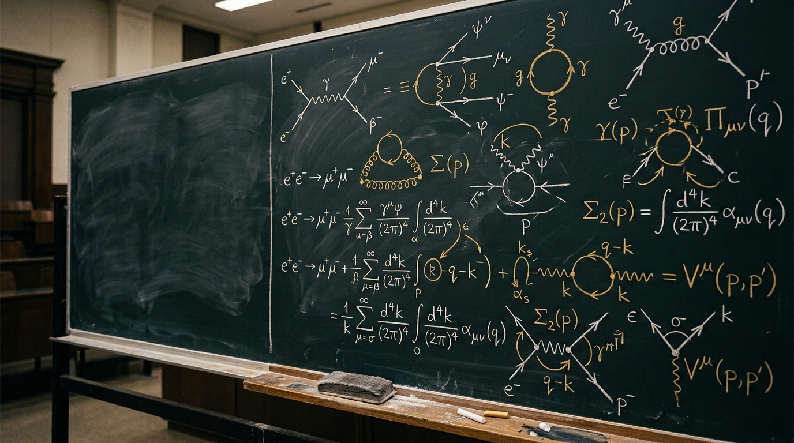
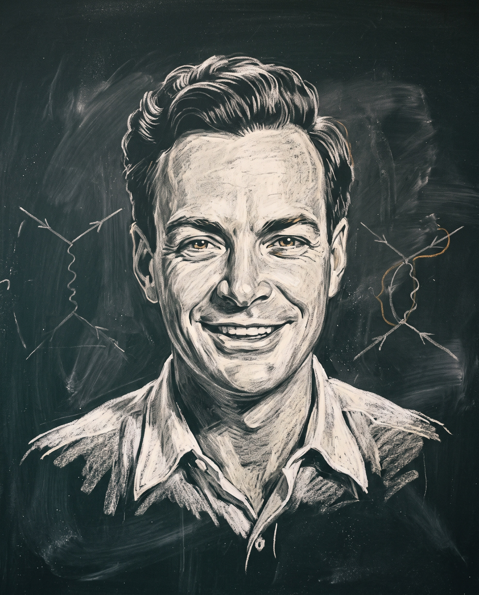
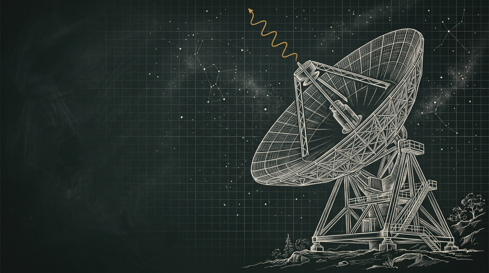

How light and matter talk, to twelve decimal places
What we will compute
- 01What QED is: two fields, one vertex
- 021927–1965: from Dirac to the Nobel lecture
- 03The Lagrangian and why gauge symmetry dictates light
- 04α ≈ 1/137: the number on every theorist's wall
- 05Feynman rules and twelve pictures
- 06Infinities, renormalization, running charge
- 07Precision: g−2, Lamb shift, muons
- 08QED for radiophysicists: photons in your antenna
- App.Glossary: objects · methods · how physicists say it

"Has Mr Feynman forgotten the uncertainty principle?" Trajectories of electrons are not allowed. Diagrams filed, not approved.
N. Bohr, Pocono Conference · verdict overturned by F. Dyson, Phys. Rev. 75 (1949)
Light, matter, nothing else.
QED is the relativistic quantum field theory of charged particles and photons. One interaction, one free number, α. From it follow chemistry, optics, lasers, antennas and the colour of gold.
ψ · the Dirac field
Spin-½ electrons and positrons as excitations of one field. Antimatter appears automatically: the equation has negative-energy solutions.
Aμ · the Maxwell field
Photons as quanta of the electromagnetic potential. A classical wave is a coherent state of very many of them.
−e ψ̄γμψ Aμ · the vertex
One electron absorbs or emits one photon. Every process is a chain of these events, each weighted by √α.
Four people, three formalisms, one theory
Dirac
Quantizes the radiation field, then writes the relativistic electron equation. Spin and antimatter fall out; so do infinities.
The infinities
Oppenheimer, Weisskopf: the electron's self-energy diverges. The theory works at first order and breaks at second.
Lamb shift
Lamb and Retherford measure a 1058 MHz split Dirac forbids. Shelter Island; Bethe computes it on the train home.
Tomonaga, Schwinger
Covariant renormalization. Schwinger's α/2π correction to the magnetic moment matches Kusch and Foley.
Feynman, Dyson
Diagrams booed at Pocono; Dyson proves the three approaches are one theory, renormalizable to all orders.
Nobel Prize
Tomonaga, Schwinger, Feynman "for their fundamental work in quantum electrodynamics". Dyson is not on the list.
The whole theory fits on one line
Symmetry first
Demand that the phase of ψ may be chosen independently at every point: ψ → eiα(x)ψ. The free Dirac term alone is not invariant.
A field is forced
Invariance survives only if a vector field Aμ exists and transforms as Aμ → Aμ + ∂μα/e. Light is the price of a local phase.
The covariant derivative
— replace ∂ by D and the interaction appears with no freedom at all.
999 177 (21)
The strength of the vertex with every unit cancelled. The same on Earth, in quasars and in every system of units. Nobody knows why it has this value.
"All good theoretical physicists put this number up on their wall and worry about it." — Feynman, QED, 1985. Because α is small, each extra photon costs ~1/137 in amplitude: that is why perturbation theory works.
Draw the picture, read off the integral
Electron propagator
A straight line with an arrow. Backward in time it is a positron.
Photon propagator
A wavy line. The 1/q² is Coulomb's law in disguise.
Vertex
Charge, energy and momentum conserved at every dot; each vertex brings a factor e, i.e. √α.
Then integrate over every internal momentum ∫d⁴k/(2π)⁴, multiply by −1 per closed fermion loop, sum all diagrams, square the total. That is the whole of QED calculus.
Every way it could happen, added up
Amplitudes, not probabilities, are what add. Interference between histories is the whole content of quantum mechanics; the diagrams are bookkeeping for which histories exist and what each one weighs.
| Order | Diagrams | Contribution to ae | Who |
|---|---|---|---|
| α | 1 | +0.001 161 41 | Schwinger 1948 |
| α² | 7 | −0.000 001 772 | Petermann, Sommerfield 1957 |
| α³ | 72 | +0.000 000 014 8 | Laporta, Remiddi 1996 |
| α⁴ | 891 | −0.000 000 000 055 | Aoyama, Kinoshita, Nio 2012–17 |
| α⁵ | 12 672 | +0.000 000 000 000 06 | Aoyama, Kinoshita, Nio 2012–19 |
ae = (g−2)/2, values rounded. Each extra loop costs a factor α/π ≈ 0.0023 and ten times more diagrams.
The bare electron is never observed
Self-energy diverges
An electron keeps emitting and reabsorbing its own photons. Integrated to infinite momentum, the loop is logarithmically infinite.
Mass and charge are inputs, not predictions
Cut off at Λ, write m₀ = m − δm(Λ), express every prediction through the physical m and e that experiments see. All Λ-dependence cancels — Dyson 1949, to every order. Two counterterms are all it ever takes.
Charge runs: 1/137 → 1/128.9 at the Z mass
Vacuum polarization screens the charge; look closer and it grows. Measured at LEP exactly as predicted. Dirac (1975) still objected: "sensible mathematics involves neglecting a quantity when it is small — not because it is infinitely great and you do not want it." Wilson's answer: renormalization is the physics of scale.
Twelve digits, and counting
Electron g/2
Penning trap, 0.13 parts per trillion. Theory agrees to about one part in 10¹².
Fan, Myers, Sukra, Gabrielse · PRL 2023
α⁻¹, CODATA 2022
Atom-recoil measurements with Rb and Cs disagree at 5.5σ — the current weak spot of the test.
CODATA 2022 · Morel 2020 · Parker 2018
Lamb shift
2S₁/₂–2P₁/₂ in hydrogen: pure vacuum fluctuation, the electron jiggled by virtual photons.
Lamb & Retherford 1947 · Bethe 1947
Muon g−2, final
Fermilab 2025. With lattice-QCD hadronic terms the Standard Model agrees: Δ = 38(63)×10⁻¹¹.
Muon g−2 collaboration · Theory Initiative 2025
For comparison: measuring the distance from Kyiv to Lisbon to the width of a human hair is one part in 10¹⁰. QED beats that by a hundred.
So far, we have found nothing wrong with the theory of quantum electrodynamics. It is, therefore, I would say, the jewel of physics — our proudest possession.

Where is the photon in your antenna?
Photons from 1 W at 1 GHz
A coherent state with that many quanta is indistinguishable from a Maxwell wave. Radio is classical because hν is tiny, not because QED switches off.
6.2 THz at 300 K · 0.42 GHz at 20 mK
Above this line photons are countable and shot noise wins; below it, thermal noise. This is why a 5 GHz transmon lives in a dilution refrigerator.
Vacuum noise hν/2 at 10 GHz
Thirty decibels under Johnson noise at room temperature (−174 dBm/Hz). A phase-preserving amplifier must add at least this: the quantum limit of every receiver.
Spontaneous emission is stimulated emission driven by vacuum fluctuations. Every LNA, mixer and radiometer sits on top of that zero-point field.
Not history: instrumentation
Circuit QED
Transmon qubits are artificial atoms coupled to microwave resonators; readout by Josephson parametric amplifiers at the quantum limit.
Cavity QED
Single atoms and single photons in superconducting cavities; Haroche and Wineland. Rabi oscillations of one quantum, watched live.
Casimir force
Two plates attract because they exclude vacuum modes. Lamoreaux 1997; now a design constraint in MEMS.
Squeezed light
LIGO injects squeezed vacuum to beat shot noise; since 2023 frequency-dependent squeezing across the whole band.
Muonic hydrogen
A muon orbits 200× closer; the Lamb shift then measures the proton's radius (Pohl 2010) — the proton radius puzzle.
Strong-field QED
The Schwinger limit: the vacuum sparks into pairs. Petawatt lasers (ELI) approach it via boosted electron beams.
Perfect, and incomplete
QED's precision is not evidence that it is final. It is the low-energy corner of a larger theory, and its own mathematics says so.
- 1952Dyson's argument. The perturbation series has zero radius of convergence — asymptotic. Twelve digits from an expansion that ultimately diverges.
- 1955Landau pole. The running coupling blows up near 10²⁸⁶ eV. Harmless in practice, fatal in principle: pure QED cannot be complete.
- 1967Electroweak unification. Glashow–Weinberg–Salam absorb QED into SU(2)×U(1); the photon is a mixture of W³ and B.
- 2020α from Cs vs Rb. Two atom-interferometer measurements disagree by 5.5σ. The electron g−2 test is limited by α, not by QED.
- 2025Hadrons in the loop. Muon g−2 agrees with lattice QCD but not with e⁺e⁻ data-driven estimates. The tension moved from QED to the data.
Symmetry writes the theory;
the vacuum does the rest
Ask for a local phase and light is forced
The photon, its coupling and Maxwell's equations follow from U(1) gauge symmetry alone.
Diagrams are integrals
Feynman's pictures are a grammar for perturbation theory; α ≈ 1/137 is why the grammar converges in practice.
Renormalization is physics, not surgery
The bare electron is unobservable; charge and mass depend on the scale you look at.
Radio is QED with 10²⁴ photons
The vacuum sets your noise floor, your amplifier's limit and the temperature of your quantum computer.
Glossary I · the objects
| Term | Say it | Українською | How it is used |
|---|---|---|---|
| photon | /ˈfəʊ-tɒn/ | фотон | A photon is emitted, absorbed, exchanged. "A virtual photon mediates the force." |
| positron | /ˈpɒz-ɪ-trɒn/ | позитрон | The antiparticle of the electron. "Pair production", "pair annihilation", never "pair birth". |
| field · field quantum | /fiːld/ | поле · квант поля | "The Dirac field", "a quantized field". Particles are excitations of fields. |
| vertex · vertices | /ˈvɜː-tɪks/ · /ˈvɜː-tɪ-siːz/ | вершина | Irregular plural. "At each vertex momentum is conserved." |
| propagator | /ˈprɒ-pə-ɡeɪ-tə/ | пропагатор | An internal line. "The photon propagator goes as one over q squared." |
| amplitude | /ˈæm-plɪ-tjuːd/ | амплітуда (ймовірності) | A complex number. Probability is "the modulus squared" or "the amplitude squared". |
| coupling constant | /ˈkʌp-lɪŋ/ | константа зв'язку | "Weak coupling", "strong coupling"; verb: "the electron couples to the photon". |
| fine-structure constant | /ˌfaɪn ˈstrʌk-tʃə/ | стала тонкої структури | Hyphenated before a noun. Spoken simply as "alpha" /ˈæl-fə/. |
| vacuum polarization | /ˈvæ-kjuːm ˌpəʊ-lə-raɪ-ˈzeɪ-ʃn/ | поляризація вакууму | "The vacuum screens the charge." UK spelling: polarisation. |
| Lamb shift | /læm ʃɪft/ | лембівський зсув | The b is silent. "The Lamb shift lifts the degeneracy of 2S and 2P." |
| anomalous magnetic moment | /ə-ˈnɒ-mə-ləs/ | аномальний магнітний момент | Written g−2, said "gee minus two". "ae" is "a-sub-e". |
Glossary II · the methods
| Term | Say it | Українською | How it is used |
|---|---|---|---|
| perturbation theory | /ˌpɜː-tə-ˈbeɪ-ʃn/ | теорія збурень | "To first order in α", "a perturbative expansion", "non-perturbative effects". |
| gauge invariance | /ɡeɪdʒ/ · rhymes with "page" | калібрувальна інваріантність | "Gauge symmetry", "to fix a gauge", "in the Lorenz gauge" (Lorenz, not Lorentz). |
| Lagrangian | /lə-ˈɡræn-dʒi-ən/ | лагранжіан | Capital L. "Write down the Lagrangian", "a Lagrangian density". |
| renormalization | /riː-ˌnɔː-mə-laɪ-ˈzeɪ-ʃn/ | перенормування | "A renormalizable theory"; "the renormalization group"; "to renormalize the charge". |
| regularization · cutoff | /ˈkʌt-ɒf/ | регуляризація · обрізання | "Impose a cutoff Λ", "dimensional regularization", "take the cutoff to infinity". |
| counterterm | /ˈkaʊn-tə-tɜːm/ | контрчлен | "Add a counterterm to cancel the divergence." One word, no hyphen. |
| divergence · to diverge | /daɪ-ˈvɜːdʒ/ | розбіжність · розбігатися | "Logarithmically divergent", "the integral diverges", "an ultraviolet divergence". |
| cross section | /ˈkrɒs ˌsek-ʃn/ | переріз розсіяння | Two words. "The differential cross section", measured in barns; "a total cross section". |
| path integral | /pɑːθ ˈɪn-tɪ-ɡrəl/ | інтеграл за траєкторіями | "Sum over histories". Stress on in-te-gral, not in-te-gral. |
| loop correction | /luːp/ | петлева поправка | "At one loop", "a two-loop calculation", "higher-order corrections", "tree level". |
| running coupling | /ˈrʌn-ɪŋ/ | біжуча константа зв'язку | "Alpha runs with energy", "evaluated at the Z mass". |
| ansatz · ansätze | /ˈæn-zæts/ | анзац · пробний вигляд розв'язку | German loanword. "We make the ansatz that…", "a trial wavefunction". |
Glossary III · the phrases
| Phrase | Meaning | Українською | Example |
|---|---|---|---|
| to first order in α | keeping only one power of α | у першому порядку за α | "To leading order, the amplitude is just one photon exchange." |
| to within · to N significant figures | with an accuracy of | з точністю до | "Theory agrees with experiment to within 0.13 parts per trillion." |
| the divergences cancel (out) | infinities remove each other | розбіжності скорочуються | "The infinities cancel between the vertex and self-energy diagrams." |
| an order of magnitude | a factor of ten | порядок величини | "An order-of-magnitude estimate"; "off by two orders of magnitude". |
| a back-of-the-envelope estimate | a quick rough calculation | оцінка «на серветці» | "On the back of an envelope, 1 W at 1 GHz is 10²⁴ photons per second." |
| vanishes identically | is exactly zero everywhere | тотожно дорівнює нулю | "The odd-loop contribution vanishes identically by Furry's theorem." |
| up to a constant · up to a phase | apart from an irrelevant factor | з точністю до сталої | "The wavefunction is defined up to a phase." |
| in the limit of … · as Λ → ∞ | when a parameter goes to an extreme | у границі | "In the non-relativistic limit the propagator reduces to Coulomb's law." |
| a factor of two | twice as large or small | удвічі | "We are off by a factor of two." Never "in two times". |
| it turns out that … | the result is, surprisingly | виявляється, що | The most frequent phrase in any lecture. "It turns out that only two counterterms are needed." |
| a sanity check | a simple test that a result is plausible | перевірка на здоровий глузд | "As a sanity check, set α = 0 and recover the free theory." |
accepted
to all orders